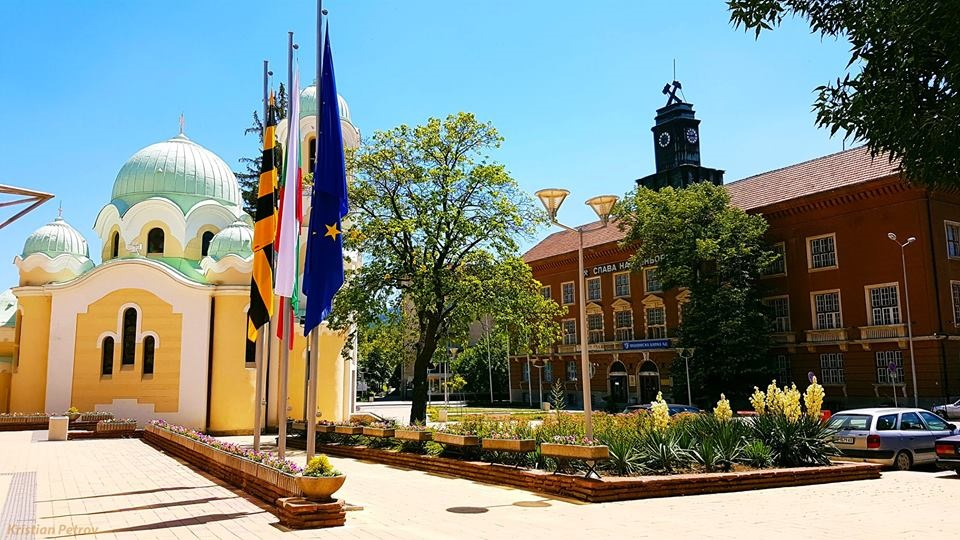

Население

Общата площ на града е 28 862 дка, включително с кварталите Бела вода, Изток, Тева и Калкас с население 93 424 жители. Населението на общината е 111 799 жители, от които 33 401 млади хора (до 25 години).
Градът е стопански, културен и административен център на община с 2 града и 22 села, с обща площ 461,1 km2, което надвишава средната площ за община в България – 427 km2 Средно на 100 km2 територия са разположени 4,98 селища. Броят на хората в трудоспособна възраст е около 65 300 души, пенсионерите са 26 129 души. Жените са повече от мъжете – 56 835 срещу 54 964. Раждаемостта е 6,1‰.
